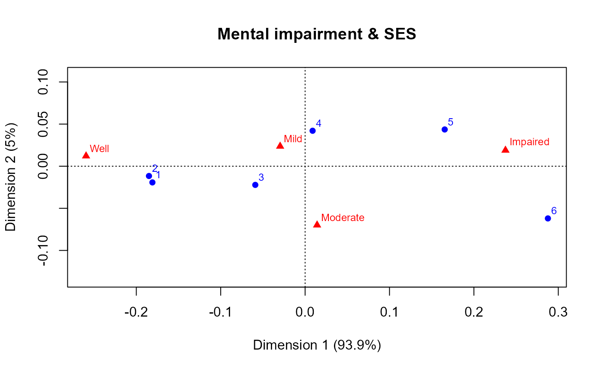

A 6 x 4 contingency table representing the cross-classification of mental
health status (mental) of 1660 young New York residents by their
parents' socioeconomic status (ses).
Format
A data frame frequency table with 24 observations on the following 3 variables.
sesan ordered factor with levels
1<2<3<4<5<6mentalan ordered factor with levels
Well<Mild<Moderate<ImpairedFreqcell frequency: a numeric vector
Source
Haberman, S. J. The Analysis of Qualitative Data: New Developments, Academic Press, 1979, Vol. II, p. 375.
Srole, L.; Langner, T. S.; Michael, S. T.; Kirkpatrick, P.; Opler, M. K. & Rennie, T. A. C. Mental Health in the Metropolis: The Midtown Manhattan Study, NYU Press, 1978, p. 289
Details
Both ses and mental can be treated as ordered factors or
integer scores. For ses, 1="High" and 6="Low".
Examples
data(Mental)
str(Mental)
#> 'data.frame': 24 obs. of 3 variables:
#> $ ses : Ord.factor w/ 6 levels "1"<"2"<"3"<"4"<..: 1 1 1 1 2 2 2 2 3 3 ...
#> $ mental: Ord.factor w/ 4 levels "Well"<"Mild"<..: 1 2 3 4 1 2 3 4 1 2 ...
#> $ Freq : int 64 94 58 46 57 94 54 40 57 105 ...
(Mental.tab <- xtabs(Freq ~ ses + mental, data=Mental))
#> mental
#> ses Well Mild Moderate Impaired
#> 1 64 94 58 46
#> 2 57 94 54 40
#> 3 57 105 65 60
#> 4 72 141 77 94
#> 5 36 97 54 78
#> 6 21 71 54 71
# mosaic and sieve plots
mosaic(Mental.tab, gp=shading_Friendly)
sieve(Mental.tab, gp=shading_Friendly)
if(require(ca)){
plot(ca(Mental.tab), main="Mental impairment & SES", lines=TRUE)
}
